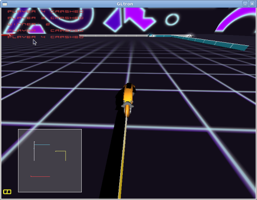
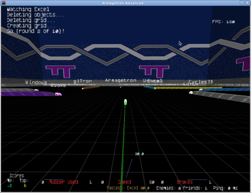
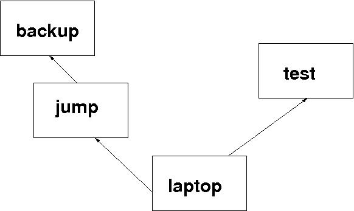
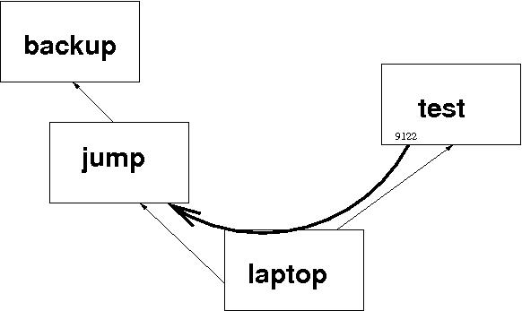

...making Linux just a little more fun!
Sam Bisbee [sbisbee at computervip.com]
Hey gang,
Here's the deal: I'm trying to delete a message from an mbox with Bash. I have the message number that I got by filtering with `frm` (the message is identified by a header that holds a unique SHA crypt). You've problem guessed by now, but mailutils is fair game.
I don't want to convert from mbox to maildir in /tmp on each run, because it's reasonable that the script would be run every minute. Also, I don't want to put users through that pain with a large mbox.
Also, I really don't want to write a "delete by message number" program in C using the libmailutils program, but I will resort to it if needed.
I saw http://www.argon.org/~roderick/mbox-purge.html, but would like to have "common" packages as dependencies only.
Is there some arg that I missed in `mail`? Should I just try and roll mbox-purge in? All ideas, tricks and release management included, are welcome.
Cheers,
-- Sam Bisbee
[ Thread continues here (10 messages/30.08kB) ]
René Pfeiffer [lynx at luchs.at]
Hello, TAG!
I am trying to brush up my French - again. So I bought some comics in French and I try to read them. Does anyone know of a command line tool or even a "vocabulary shell" that allows me to quickly look up words, prreferrably French words with Germen or English translations?
I can always hack a Perl script that queries dict.leo.org or similar services, but a simple lookup tool should be around already.
Salut, René.
[ Thread continues here (7 messages/11.42kB) ]
[ In reference to "2-Cent Tips" in LG#168 ]
Amit Saha [amitsaha.in at gmail.com]
Hell Bob McCall:
On Mon, Feb 1, 2010 at 8:27 PM, Bob McCall <rcmcll@gmail.com> wrote:
> Amit: > I saw your two cent tip on gnuplot. Have you seen this? > > http://ndevilla.free.fr/gnuplot/ > > best, > Bob
Nice! Thanks for the pointer, I am CCing TAG.
Best, Amit
-- Journal: http://amitksaha.wordpress.com, µ-blog: http://twitter.com/amitsaha Freenode: cornucopic in #scheme, #lisp, #math,#linux, #python
Ben Okopnik [ben at linuxgazette.net]
During a recent email discussion regarding pulling down the LG archives with 'wget', I discovered (perhaps mistakenly; if so, I wish someone would enlighten me [1]) that there's no way to tell it to pull down all the files in a directory unless there's a page that links to all those files... and the directory index doesn't count (even though it contains links to all those files.) So, after a minute or two of fiddling with it, I came up with a following solution:
#!/bin/bash
# Created by Ben Okopnik on Fri Jan 29 14:41:57 EST 2010
[ -z "$1" ] && { printf "Usage: ${0##*/} <URL> \n"; exit; }
# Safely create a temporary file
file=`tempfile`
# Extract all the links from the directory listing into a local text file
wget -q -O - "$1"|\
URL="${1%/}" perl -wlne'print "$ENV{URL}/$2" if /href=(["\047])([^\1]+)\1/' > $file
# Retrieve the listed links
wget -i $file && rm $file
To summarize, I used 'wget' to grab the directory listing, parse it to extract all the links, prefixing them with the site URL, and saved the result into a local tempfile. Then, I used that tempfile as a source for 'wget's '-i' option (read the links to be retrieved from a file.)
I've tested this script on about a dozen directories with a variety of servers, and it seems to work fine.
[1] Please test your proposed solution, though. I'm rather cranky at 'wget' with regard to its documentation; perhaps it's just me, but I often find that the options described in its manpage do something rather different from what they promise to do. For me, 'wget' is a terrific program, but the documentation has lost something in the translation from the original Martian.
-- * Ben Okopnik * Editor-in-Chief, Linux Gazette * http://LinuxGazette.NET *
Dr. Parthasarathy S [drpartha at gmail.com]
At times, you may need to know exactly how big is a certain directory (say top directory) along with all its contents and subdirectories(and their contents). You may need this if you are copying a large diectory along with its contents and structure. And you may like to know if what you got after the copy, is what you sent. Or you may need this when trying to copy stuff on to a device where the space is limited. So you want to make sure that you can accomodate the material you are planning to send.
Here is a cute little script. Calling sequence::
howmuch <top directory name>
You get a summary, which gives the total size, the number of subdirectories, and the number of files (counted from the top directory). Good for book-keeping.
###########start-howmuch-script # Tells you how many files, subdirectories and content bytes in a # directory # Usage :: how much <directory-path-and-name> # check if there is no command line argument if [ $# -eq 0 ] then echo "You forgot the directory to be accounted for !" echo "Usage :: howmuch <directoryname with path>" exit fi echo "***start-howmuch***" pwd > ~/howmuch.rep pwd echo -n "Disk usage of directory ::" > ~/howmuch.rep echo $1 >> ~/howmuch.rep echo -n "made on ::" >> ~/howmuch.rep du -s $1 > ~/howmuch1 tree $1 > ~/howmuch2 date >> ~/howmuch.rep tail ~/howmuch1 >> ~/howmuch.rep tail --lines=1 ~/howmuch2 >> ~/howmuch.rep cat ~/howmuch.rep # cleanup rm ~/howmuch1 rm ~/howmuch2 #Optional -- you can delete howmuch.rep if you want #rm ~/howmuch.rep echo "***end-howmuch***" # ########end-howmuch-script
-- --------------------------------------------------------------------------------------------- Dr. S. Parthasarathy | mailto:drpartha@gmail.com Algologic Research & Solutions | 78 Sancharpuri Colony | Bowenpally P.O | Phone: + 91 - 40 - 2775 1650 Secunderabad 500 011 - INDIA | WWW-URL: http://algolog.tripod.com/nupartha.htm ---------------------------------------------------------------------------------------------
[ Thread continues here (5 messages/9.85kB) ]
René Pfeiffer [lynx at luchs.at]
Hello!
I had a decent fight with a stubborn server today. It was a Fedora Core 6 system (let's not talk about how old it is) that was scheduled for a change of disks. This is fairly straightforward - until you have to write the boot block. Unfortunately I prepared the new disks before copying the files. As soon as I wanted to install GRUB 0.97 it told me that it could not read the stage1 file. The problem is that GRUB only deals with 128-byte inodes. The prepared / partition has 256-byte inodes. So make sure to use
mkfs.ext3 -I 128 /dev/sda1
when preparing disks intended to co-exist with GRUB. I know this is old news, but I never encountered this problem before. http://www.linuxplanet.com/linuxplanet/tutorials/6480/2/ has more hints ready.
Best, René, who is thinking about moving back to LILO.
[ Thread continues here (3 messages/2.77kB) ]
Mulyadi Santosa [mulyadi.santosa at gmail.com]
For most people, to send a job to background after stopping a task, he/she will take a note the job ID and then invoke "bg" command appropriately like below:
$ (while (true); do yes > /dev/null ; done)
^Z
[2]+ Stopped ( while ( true ); do
yes > /dev/null;
done )
$ bg %2
[2]+ ( while ( true ); do
yes > /dev/null;
done ) &
Can we omit the job ID? Yes, we can. Simply replace the above "bg %2" with "bg %%". It will refer to the last stopped job ID. This way, command typing mistake could be avoided too.
-- regards, Mulyadi Santosa Freelance Linux trainer and consultant blog: the-hydra.blogspot.com training: mulyaditraining.blogspot.com
[ Thread continues here (4 messages/4.27kB) ]
By Deividson Luiz Okopnik and Howard Dyckoff

|
Contents: |
Please submit your News Bytes items in plain text; other formats may be rejected without reading. [You have been warned!] A one- or two-paragraph summary plus a URL has a much higher chance of being published than an entire press release. Submit items to bytes@linuxgazette.net. Deividson can also be reached via twitter.
 Red Hat Announces Fourth Annual Innovation Awards
Red Hat Announces Fourth Annual Innovation AwardsThe fourth annual Red Hat Innovation awards will be presented at the 2010 Red Hat Summit and JBoss World, co-located in Boston, from June 22 to 25. The Innovation Awards recognize the creative use of Red Hat and JBoss solutions by customers, partners and the community.
Categories for the 2010 Innovation Awards include:
Submissions for the Innovations Awards will be accepted until April 15, 2010. Four categories will each recognize two winning submissions, one from Red Hat and one from JBoss, and the Outstanding Open Source Architecture category will recognize one winner who is deploying both Red Hat and JBoss solutions. From these category winners, one Red Hat Innovator of the Year and one JBoss Innovator of the Year will be selected by the community through online voting, and will be announced at an awards ceremony at the Red Hat Summit and JBoss World. To view last year's winners, visit: http://press.redhat.com/2009/09/10/red-hat-and-jboss-innovators-of-the-year-2009/.
For more information, or to submit a nomination for the 2010 Innovation Awards, visit: www.redhat.com/innovationawards. For more information on the 2010 Red Hat Summit and JBoss World, visit: http://www.redhat.com/promo/summit/2010/.
Novell and LPI Partner on Linux Training and CertificationNovell and The Linux Professional Institute (LPI) have announced an international partnership to standardize their entry-level Linux certification programs on LPIC-1. Under this program, Linux professionals who have earned their LPIC-1 status will also satisfy the requirements for the Novell Certified Linux Administrator (CLA) certification. In addition, Novell Training Services has formally agreed to include required LPIC-1 learning objectives in its CLA course training material.
Adoption of Linux, including SUSE Linux Enterprise from Novell, is accelerating as the industry pursues cost saving solutions that deliver maxiumum reliability and manageability. A 2009 global survey of IT executives revealed that 40 percent of survey participants plan to deploy additional workloads on Linux over the next 12-24 months and 49 percent indicated Linux will be their primary server platform within five years.
"This partnership represents the strong support the LPI certification program has within the wider IT and Linux community. This historical support has included contributions from vendors such as Novell and has assisted LPI to become the most widely recognized and accepted Linux certification," said Jim Lacey, president and CEO of LPI. "We look forward to working with Novell to promote the further development of the Linux workforce of the future. In particular, by aligning its training and exam preparation curriculum to support LPIC-1 objectives, Novell has recognized the industry's need for a vendor-neutral certification program that prepares IT professionals to work with any Linux distribution in an enterprise environment."
Under the terms of the agreement, all qualified LPIC-1 holders - except those in Japan - will have the opportunity to apply for Novell CLA certification without additional exams or fees. Novell Training Services will include LPIC-1 objectives into its Linux Administrator curriculum and programs which include self study, on demand, and partner-led classroom training.
More information about acquiring dual certification status can be found at Novell here: http://www.novell.com/training/certinfo/cla/ and at the Linux Professional Institute here: http://www.lpi.org/cla/.
RHEL 5.5 Beta AvailableRed Hat has announced the beta release of RHEL 5.5 (kernel-2.6.18-186.el5) for the Red Hat Enterprise Linux 5 family of products including RHEL 5 Server, Desktop, and Advanced Platform for x86, AMD64/Intel64, Itanium Processor Family, and Power Systems micro-processors.
The supplied beta packages and CD and DVD images are intended for testing purposes only. Benchmark and performance results cannot be published based on this beta release without explicit approval from Red Hat.
The beta of RHEL 5.5, called Anaconda, has an "upgrade" option for an upgrade from Red Hat Enterprise Linux 4.8 or 5.4 to the Red Hat Enterprise Linux 5.5 beta. However Red Hat cautions that there is no guarantee the upgrade will preserve all of a system's settings, services, and custom configurations. For this reason, Red Hat recommends a fresh install rather than an upgrade. Upgrading from beta release to the GA product is not supported.
A public general discussion mailing list for beta testers is at: https://www.redhat.com/mailman/listinfo/rhelv5-beta-list/ The beta testing period is scheduled to continue through March 16, 2010.
SimplyMEPIS 8.5 Beta5MEPIS has announced SimplyMEPIS 8.4.97, the fifth beta of the forthcoming MEPIS 8.5, now available from MEPIS and public mirrors. The ISO files for 32 and 64 bit processors are SimplyMEPIS-CD_8.4.97-b5_32.iso and SimplyMEPIS-CD_8.4.97-b5_64.iso respectively. Deltas, requested by the MEPIS community, are also available.
According to project lead Warren Woodford, "We are coming down the home stretch on the development of SimplyMEPIS version 8.5. There is some work to be done on MEPIS components, but the major packages are locked in to what may be their final versions. We've been asked to make more package updates, but we can't go much further without switching to a Debian Squeeze base. Currently, we have kernel 2.6.32.8, KDE 4.3.4, gtk 2.18.3-1, OpenOffice 3.1.1-12, Firefox 3.5.6-2, K3b 1.70.0-b1, Kdenlive 0.7.6, Synaptic 0.63.1, Gdebi 0.5.9, and bind9 9.6.1-P3."
Progress on SimplyMEPIS development can be followed at http://twitter.com/mepisguy/ or at http://www.mepis.org/.
ISO images of MEPIS community releases are published to the 'released' subdirectory at the MEPIS Subscriber's Site and at MEPIS public mirrors.
Tiny Core Releases V2.8Tiny Core Linux is a very small (10 MB) minimal Linux GUI Desktop. It is based on Linux 2.6 kernel, Busybox, Tiny X, and Fltk. The core runs entirely in ram and boots very quickly. Also offered is Micro Core a 6 MB image that is the console based engine of Tiny Core. CLI versions of Tiny Core's program allows the same functionality of Tiny Core's extensions only starting with a console based system.
It is not a complete desktop nor is all hardware completely supported. It represents only the core needed to boot into a very minimal X desktop typically with wired Internet access.
Extra applications must be downloaded from online repositories or compiled using tools provided.
The theme for this newest release is to have a single directory for extensions and dependencies. This greatly improves systems resources by having a single copy of dependencies, also greatly improves flexibility in "moving" applications present upon boot, dependency auditing, and both batch and selective updating.
Tiny Core V2.8 is now posted at http://distro.ibiblio.org/pub/linux/distributions/tinycorelinux/2.x/release/.FreeBSD 7.3 Expected March 2010The FreeBSD 7.3 Beta-1 for legacy systems was released on January 30. The production release is expected in early March.
Ksplice "Abolishes the Reboot"Ksplice Inc. announced its Uptrack service patching service in February, eliminating the need to restart Linux servers when installing crucial updates and security patches.
Based on technology from the Massachusetts Institute of Technology, Ksplice Uptrack is a subscription service that allows IT administrators to keep Linux servers up-to-date without the disruption and downtime of rebooting.
In 2009, major Linux vendors asked customers to install a kernel update roughly once each month. Before Uptrack, system administrators had to schedule downtime in advance to bring Linux servers up-to-date, because updating the kernel previously required rebooting the computer. By allowing IT administrators to install kernel updates without downtime, Uptrack dramatically reduces the cost of system administration.
Ksplice Uptrack is now available for users of six leading versions of Linux: Red Hat Enterprise Linux, Ubuntu, Debian GNU/Linux, CentOS, Parallels Virtuozzo Containers, and OpenVZ. The subscription fee starts at $3.95 per month per system, after a 30-day free trial. The rate drops to $2.95 after 20 servers are covered. A free version is also available for Ubuntu.
Visit the Ksplice website here: http://www.ksplice.com/.
MariaDB Augments MySQL 5.1MariaDB 5.1.42, a new branch of the MySQL database - which includes all major open source storage engines, myriad bug fixes, and many community patches - has been released.
MariaDB is kept up to date with the latest MySQL release from the same branch. MariaDB 5.1.42 is based on MySQL 5.1.42 and XtraDB 1.0.6-9. In most respects MariaDB will work exactly as MySQL: all commands, interfaces, libraries and APIs that exist in MySQL also exist in MariaDB.
MariaDB contains extra fixes for Solaris and Windows, as well as improvements in the test suite.
For information on installing MariaDB 5.1.42 on new servers or upgrading to MariaDB 5.1.42 from previous releases, please check out the installation guide at http://askmonty.org/wiki/index.php/Manual:Installation/.
MariaDB is available in source and binary form for a variety of platforms and is available from the download pages: http://askmonty.org/wiki/index.php/MariaDB:Download:MariaDB_5.1.42/.
Moonlight 3.0 Preview Now AvailableThe Moonlight project has released the second preview of Moonlight 3.0 in time for viewing the Winter Olympics. The final release will contain support for some features in Silverlight 4.
Moonlight is an open-source implementation of Microsoft's Silverlight platform for creating and viewing multiple media types.
This release updates the Silverlight 3.0 support in Moonlight 2.0, mostly on the infrastructure level necessary to support the rest of the features. This release includes:
Download Moonlight here: http://www.go-mono.com/moonlight/.
OpenOffice.org 3.2 Faster, More SecureAt the start of its tenth anniversary year, the OpenOffice.org Community announced OpenOffice.org 3.2. The latest version starts faster, offers new functions and better compatibility with other office software. The newest version also fixes bugs and potential security vulnerabilities.
In just over a year from its launch, OpenOffice.org 3 had recorded over one hundred million downloads from its central download site alone.
OpenOffice.org 3.2 new features include:
A full guide to new features is available at http://www.openoffice.org/dev_docs/features/3.2/.
All users are encouraged to upgrade to the new release, because of the potential security vulnerabilities addressed in 3.2. Any people still using OpenOffice.org 2 should note that this version was declared 'end of life' in December 2009, with no further security patches or bugfixes being issued by the Community. For details, see http://development.openoffice.org/releases/eol.html.
The security bulletin covering fixes for the potential vulnerabilities is here: http://www.openoffice.org/security/bulletin.html.
Download OpenOffice.org 3.2 here: http://download.openoffice.org.
New Release of Oracle Enterprise Pack for Eclipse 11gIn February, Oracle released the Oracle Enterprise Pack for Eclipse 11g, a component of Oracle's Fusion Middleware.
The Enterprise Pack for Eclipse is a free set of certified plug-ins that enable developers to build Java EE and Web Services applications for the Oracle Fusion Middleware platform where Eclipse is the preferred Integrated Development Environment (IDE). This release provides an extension to Eclipse with Oracle WebLogic Server features, WYSIWYG Web page editing, SCA support, JAX-WS Web Service validation, an integrated tag and data palette, and smart editors.
Also new with this release is Oracle's AppXRay feature, a design time dependency analysis and visualization tool that makes it easy for Java developers to work in a team setting and reduce runtime debugging. The new features in Oracle Enterprise Pack for Eclipse 11g allow WebLogic developers to increase code quality by catching errors at design time.
FastSwap support enables WebLogic developers to use FastSwap in combination with AppXRay to allow changes to Java classes without requiring re-deployment, also reducing the amount of time spent deploying/re-deploying an application.
GWOS Monitor Enterprise Release 6.1 Adds Ubuntu SupportGWOS Monitor Enterprise Release 6.1 has added support for Ubuntu servers. It also includes many improvements and strengthens the GWOS platform for monitoring heterogeneous, complex IT environments. This new release, part of the ongoing evolution of the GWOS solution stack, is available to Enterprise customers with a current subscription agreement. GroundWorks is also available in a community edition.
Highlights in this new release include:
GroundWork 6.1, Enterprise Edition with Ubuntu support, is only $49 for the first 100 devices monitored. Download it here: http://www.groundworkopensource.com/newExchange/flex-quickstart/.
Also in January, GroundWork released Brooklyn, their iPhone app for GroundWork Monitor and Nagios. The iPhone app costs $8.99 at the Apple App Store.
Talkback: Discuss this article with The Answer Gang
![[BIO]](../gx/authors/dokopnik.jpg)
Deividson was born in União da Vitória, PR, Brazil, on 14/04/1984. He became interested in computing when he was still a kid, and started to code when he was 12 years old. He is a graduate in Information Systems and is finishing his specialization in Networks and Web Development. He codes in several languages, including C/C++/C#, PHP, Visual Basic, Object Pascal and others.
Deividson works in Porto União's Town Hall as a Computer Technician, and specializes in Web and Desktop system development, and Database/Network Maintenance.
Howard Dyckoff is a long term IT professional with primary experience at
Fortune 100 and 200 firms. Before his IT career, he worked for Aviation
Week and Space Technology magazine and before that used to edit SkyCom, a
newsletter for astronomers and rocketeers. He hails from the Republic of
Brooklyn [and Polytechnic Institute] and now, after several trips to
Himalayan mountain tops, resides in the SF Bay Area with a large book
collection and several pet rocks.
Howard maintains the Technology-Events blog at
blogspot.com from which he contributes the Events listing for Linux
Gazette. Visit the blog to preview some of the next month's NewsBytes
Events.

By Silas Brown
When I accidentally dropped an old Windows Mobile PocketPC onto the floor at the exact moment it was writing to a memory card, the memory card's master FAT was corrupted and several directories disappeared from the root directory. Since it had not been backed up for some time, I connected the memory card to a Linux system for investigation. (At this point it is important not to actually mount the card. If you have an automounter, turn it off before connecting. You have to access it as a device, for example /dev/sdb1. To see which device it is, you can do ls /dev/sd* both before and after connecting it and see what appears. The following tools read from the device directly, or from an image of it copied using the dd command.)
fsck.vfat -r offered to return over 1 GB of data to the free space. This meant there was over 1 GB of data that was neither indexed in the FAT nor listed as free space, i.e. that was the lost directories. It was important not to let fsck.vfat mark it as free yet, as this would impair data recovery. fsck.vfat can also search this data for contiguous blocks and reclaim them as files, but that would not have been ideal either because the directory structure and all the filenames would have been lost, leaving thousands of meaninglessly-named files to be sorted out by hand (some of which may end up being split into more than one file).
The directory structure was in fact still there; only the entries for the top-level directories had been lost. The listings of their subdirectories (including all filenames etc) were still present somewhere on the disk, but the root directory was no longer saying where to find them. A few Google searches seemed to suggest that the orphaned directory listings are commonly known as "directory stubs" and I needed a program that could search the disk for lost directory stubs and restore them. Unfortunately such programs were not very common. The only one I found was a commercial one called CnW Recovery, but that requires administrator access to a Windows PC (which I do not have).
A useful utility is SleuthKit, available as a package on most distributions (apt-get install sleuthkit) or from sleuthkit.org. SleuthKit consists of several commands, the most useful of which are fls and icat. The fls command takes an image file (or device) and an inode number, and attempts to display the directory listing that is stored at that inode number (if there is one). This directory listing will show files and other directories, and the inode numbers where they are stored. The icat command also takes an image file and an inode number, and prints out the contents of the file stored at that inode number if there is one. Hence, if you know the inode number of the root directory, you can chase through a normal filesystem with fls commands (following the inode numbers of subdirectories etc) and use icat to access the files within them. fls also lists deleted entries (marked with a *) as long as those entries are still present in the FAT. (Incidentally, these tools also work on several other filesystems besides FAT, and they make them all look the same.)
The range of valid inode numbers can be obtained using SleuthKit's fsstat command. This tells you the root inode number (for example 2) and the maximum possible inode number (for example 60000000). fsstat will also give quite a lot of other information, so you may want to pipe its output through a pager such as more or less (i.e. type fsstat|more or fsstat|less) in order to catch the inode range near the beginning of the output.
Because the root FAT had been corrupted, using fls on it did not reveal the inode locations of the lost directories. Therefore it was necessary to scan through all possible inode numbers in order to find them. This is a lot of work to do manually, so I wrote a Python script to call the necessary fls commands automatically. First it checks the root directory and all subdirectories for the locations of "known" files and directories, and then it scans all the other inodes to see if any of them contain directory listings that are not already known about. If it finds a lost directory listing, it will try to recover all the files and subdirectories in it with their correct names, although it cannot recover the name of the top-level directory it finds.
Sometimes it finds data that just happens to pass the validity check for a directory listing, but isn't. This results in it creating a "recovered" directory full of junk. But often it correctly recovers a lost directory.
image = "/dev/sdb1"
recover_to = "/tmp/recovered"
import os, commands, sys
def is_valid_directory(inode):
exitstatus,outtext = commands.getstatusoutput("fls -f fat "+image+" "+str(inode)+" 2>/dev/null")
return (not exitstatus) and outtext
def get_ls(inode): return commands.getoutput("fls -f fat "+image+" "+str(inode))
def scanFilesystem(inode, inode2path_dic, pathSoFar=""):
if pathSoFar: print " Scanning",pathSoFar
for line in get_ls(inode).split('\n'):
if not line: continue
try: theType,theInode,theName = line.split(None,2)
except: continue # perhaps no name (false positive inode?) - skip
if theInode=='*': continue # deleted entry (theName starts with inode) - ignore
assert theInode.endswith(":") ; theInode = theInode[:-1]
if theType=="d/d": # a directory
if theInode in inode2path_dic: continue # duplicate ??
inode2path_dic[theInode] = pathSoFar+theName+"/"
scanFilesystem(theInode, inode2path_dic, pathSoFar+theName+"/")
elif theType=="r/r": inode2path_dic[theInode] = pathSoFar+theName
print "Finding the root directory"
i=0
while not is_valid_directory(i): i += 1
print "Scanning the root directory"
root_inode2path = {}
scanFilesystem(i,root_inode2path)
print "Looking for lost directory stubs"
recovered_directories = {}
while i < 60000000:
i += 1
if i in root_inode2path or i in recovered_directories: continue # already known
sys.stdout.write("Checking "+str(i)+" \r") ; sys.stdout.flush()
if not is_valid_directory(i): continue
inode2path = root_inode2path.copy()
scanFilesystem(i,inode2path)
for n in inode2path.keys():
if n in root_inode2path: continue # already known
p = recover_to+"/lostdir-"+str(i)+"/"+inode2path[n]
if p[-1]=="/": # a directory
recovered_directories[n] = True
continue
print "Recovering",p
os.system('mkdir -p "'+p[:p.rindex("/")]+'"')
os.system("icat -f fat "+image+" "+str(n)+' > "'+p+'"')
Note that the script might find a subdirectory before it finds its parent directory. For example if you have a lost directory A which has a subdirectory B, it is possible that the script will find B first and recover it, then later when it finds A it will recover A, re-recover B, and place the new copy of B inside the recovered A, so you will end up with both A, B and A/B. You have to manually decide which of the recovered directories are actually the top-level ones. The script does not bother to check for .. entries pointing to a directory's parent, because these were not accurate on the FAT storage card I had (they may be more useful on other filesystems). If you want you can modify the script to first run the inode scan to completion without recovering anything, then analyze them, discarding any top-level ones that are also contained within others. However, running the scan to completion is likely to take far longer than looking at the directories by hand.
As it is, you can interrupt the script once it has recovered what you want. If Control-C does not work, use Control-Z to suspend it and do kill %1 or whatever number bash gave you when you suspended the script.
This script can take several days to run through a large storage card. You can speed it up by using dd to take an image of the card to the hard disk (which likely has faster access times than a card reader); you can also narrow the range of inodes that are scanned if you have some idea of the approximate inode numbers of the lost directories (you can get such an idea by using fls to check on directories that are still there and that were created in about the same period of time as the lost ones).
After all the directories have been recovered, you can run fsck.vfat -r and let it return the orphaned space back to the free space, and then mount the card and copy the recovered directory structures back onto it.
Some GNU/Linux live CDs have a forensic mode that doesn't touch local storage media. For example if you boot the GRML live CD you can select "forensic mode" and can safely inspect attached harddisks or other media. AFAIK Knoppix has a similar option. -- René
Talkback: Discuss this article with The Answer Gang
![[BIO]](../gx/authors/brownss.jpg)
Silas Brown is a legally blind computer scientist based in Cambridge UK. He has been using heavily-customised versions of Debian Linux since 1999.
This month in NGLG, I'm taking a look at a couple of 3D games that don't require too much horsepower, but are still fun diversions.
Lightcycle games should seem familiar to anyone who has played the 'snake' type games that are common on cell phones. The goal is to box in your opponents with your trail, all the while making sure you don't slam into their trails (as well as your own!). Often, the games mimic the look and feel from the 1982 film Tron, and require quick reflexes and a mind for strategy.
First up is GLtron, which has a good original soundtrack, highly detailed lightcycles, and very simple controls. The programmers have done a great job in making sure the game can be expanded with different artpacks, and the game is quite responsive and fluid. The head programmer, Andreas Umbach, gave an update on the game's site a few months ago about his plans to picking the game back up, and it sounds like network play might be coming out shortly. That's a good thing, because without network play the game doesn't get quite the replay value that it should. There's a split-screen multiplayer mode, but those with small screens will have a hard time with it.
Looking for an online multiplayer version of Tron-clones, I came across Armagetron Advanced. This was originally a fork of Armagetron, as the lead, Manual Moos, had stopped updating the original. After the extension by several open source contributors, Manual returned, and the fork officially obsoleted the original Armagetron. If you've only played the original, you might want to give the Advanced version a try.
Armegetron Advanced not only has network multiplayer capability, but it also has other gameplay elements that add to the fun of the game, such as 'death zones' and lines that diminish over time. Getting on a server was a snap, and the lag was minimal (a necessity for this type of game). The folks behind the game have done a fantastic job putting up documentation on their site: not just on how to tweak the game for that extra little bit of speed, but also the various tactics and strategies you can use to master the game.
GLtron's website has the source and other helpful information about the game, and it's likely that your distribution already has this packaged. The Armagetron Advanced website has server lists, a well-maintained wiki, and packages for the major distros.
There are Mac OS X and Windows versions of these games, so you can play along with your friends who might not use Linux.
If there's a game you would like to see reviewed, or have an update on one already covered, just drop me a line.
Talkback: Discuss this article with The Answer Gang
![[BIO]](../gx/authors/crosby.jpg)
Dafydd Crosby has been hooked on computers since the first moment his dad let him touch the TI-99/4A. He's contributed to various different open-source projects, and is currently working out of Canada.
The Great Recession's impact continues to grow and there are fewer IT and Open Source conferences on the horizon. However, three upcoming events are worth mentioning - the annual RSA security confab at the beginning of March, the Open Source Business Conference (OSBC), and EclipseCon. All three are in the SF Bay Area and you could spend a great month dropping in on all three venues. Of course, you will have to risk getting swabbed down by TSA agents to get there. Security first.
This year, much of the discussion at RSA will focus on the Advanced Pervasive Threat, or APT. These are the increasingly sophisticated, multi-pronged attacks and compromises from criminal syndicates and, reportedly, from foreign state cyberwarfare agencies. Perhaps WW-IV has already started - but you'll have to come to this year's RSA to find out.
As always, or at least in recent years, a prominent security Fed will be highlighted in a keynote. This year, the high-profile industry experts include:
If you would like to attend, visit this link: http://www.rsaconference.com/2010/usa/last-chance/prospects.htm
On the other hand, some vendors like Tipping Point and Qualsys are offering free expo passes that that will allow you to attend the Monday sessions organized by the Trusted Computing Group (TCG). I definitely recommend going to the Monday TCG sessions. It may be a little late for this deal, but try code SC10TPP.
OSBC is in its 7th year and is the leading business-oriented venue for discussing open source companies and business models. However, some of the sessions do seem to be updates from the previous years.
It will be held again at the attractive and compact Palace Hotel in downtown San Francisco which is a bit of a tourist magnet by itself. The West exit of the Montgomery St. BART station brings you up right by the entrance.
For this year the keynote addresses look at the developing open source market:
Here's the agenda for this year's Open Source Business Conference: http://www.osbc.com/ehome/index.php?eventid=7578&tabid=3659
And this link shows the sessions held in 2009: http://www.infoworld.com/event/osbc/09/osbc_sessions.html
The EclipseCon schedule gets morphed for 2010. It will offer EclipseCon 2010 talks on dozens of topics, going from 12-minute lightning talks, which introduce new topics, to three-hour tutorials. For four days, there will be morning hands-on tutorials, then technical sessions in the afternoon, followed later by panel discussions. This format might led to less conference burnout.
EclipseCon this year will offer a new Unconference in addition to its usual evening BOFs. The first three nights (Monday-Wednesday) will offer three rooms with AV and a chance to present any Eclipse-relevant topic on a first-come, first-served basis. These presentations must be short (a maximum of 25 minutes) and focused.
If you are quick, you can save a bit on the EclipseCon price - the advance registration price is $1795 until March 19, 2010. Here's the link to register: http://www.eclipsecon.org/2010/registration/
Last year's EclipseCon was enjoyable but compressed and filled with session conflicts. To view many, many recorded videos from last year's eclipse, just go to http://www.eclipsecon.org/2009 and select a session to play. I would recommend the sessions on Android and the Eclipse Ecosystem, e4 - flexible resources for next generation applications and tools, and Sleeping Around: Writing tools that work in Eclipse, Visual Studio, Ruby, and the Web.
Talkback: Discuss this article with The Answer Gang
Howard Dyckoff is a long term IT professional with primary experience at
Fortune 100 and 200 firms. Before his IT career, he worked for Aviation
Week and Space Technology magazine and before that used to edit SkyCom, a
newsletter for astronomers and rocketeers. He hails from the Republic of
Brooklyn [and Polytechnic Institute] and now, after several trips to
Himalayan mountain tops, resides in the SF Bay Area with a large book
collection and several pet rocks.
Howard maintains the Technology-Events blog at
blogspot.com from which he contributes the Events listing for Linux
Gazette. Visit the blog to preview some of the next month's NewsBytes
Events.
I met Justin when I was contracting to one of the world's biggest computer companies, OOTWBCC, building Solaris servers for one of Australia's biggest companies (OOABC). Justin is in EBR (Enterprise Backup and Recovery). (OOTWBCC is almost certainly the world's most prolific acronym generator (TWMPAG).) I was writing scripts to automate much of the install of EBR.
To do a good job of developing automation scripts, one needs a test environment. Well, to do a good job of developing just about anything, one needs a test environment. In our case, there was always an imperative to rush the machines we were building out the door and into production (pronounced BAU (Business As Usual) at TWMPAG). Testing on BAU machines was forbidden (fair enough).
Although OOTWBCC is a huge multinational, it seems to be reluctant to invest in hardware for infrastructure. Our test environment consisted of a couple of the client's machines. They were "network orphans", with limited connectivity to other machines.
Ideally, one also wants a separate development environment, especially a repository for source code. Clearly this was asking too much, so Justin and I shrugged and agreed to use one of the test servers as a CVS repository.
The other test machine was constantly being trashed and rebuilt from scratch as part of the test process. Justin started to get justifiably nervous. One day he came to me and said that we needed to back up the CVS repository. "And while we're at it, we should also back up a few other directories."
Had this been one of the typical build servers, it would have had direct access to all of the network, but, as I said before, this one was a network orphan. Diagram 1 indicates the relevant connectivity.
test the test machine and home of the CVS repository laptop my laptop jump an intermediate machine backup the machine which partakes in regular tape backup
If we could get the backup data to the right directory on backup, the corporate EBR system would do the rest.
The typical response I got to my enquiries was, "Just copy the stuff to your laptop, and then to the next machine, and so on." If this were a one-off, I might do that. But what's the point of a single backup? If this activity is not performed at least daily, it will soon be useless. Sure, I could do it manually. Would you?
I'm going to present the solution step by step. Many of you will find some of this just motherhoods[1]. Skip ahead.
My laptop ran Fedora 10 in a VirtualBox under MS Windows XP. All my useful work was done in the Fedora environment.
If I want to copy a single file from the test machine to my laptop, then, on the laptop, I would use something like:
scp -p test:/tmp/single.file /path/to/backup_dirThis would create the file /path/to/backup_dir/single.file on my laptop.
To copy a whole directory tree once, I would use:
scp -pr test:/tmp/top_dir /path/to/backup_dirThis would populate the directory /path/to/backup_dir/top_dir.
Why did I say "once"? scp is fine if you want to copy a directory tree once. And it's fine if the directory tree is not large. And it's fine if the directory tree is extremely volatile (ie frequently changes completely (or pretty much)).
But what we have here is a directory tree which simply accumulates incremental changes. I guess over 80% of the tree will be the same from one day to the next. Admittedly, the tree is not large, and the network is pretty quick, but even so, it's nice to do it the right way - if possible.
There is another problem, potentially a much bigger problem. The choice of scp or some other program is about efficiency and elegance. This problem can be a potential roadblock: permissions.
The way scp works, I have to log in to test. But I can only directly log in as myself (my user id on test). If I want root privileges I have to use su or sudo. In either case, I'd have to supply another password. I could do it that way, but it requires even stronger magic than I'm using so far (and I think it could be a bit less secure than the solution I plan to present).
Have another look at Diagram 1. Notice the arrows? Yes, Virginia, they really are one-way arrows. (The link between jump and backup is probably two-way in real life, but the exercise is more powerful if it's one-way, so let's go with the diagram as it is.)
To get from my laptop to the test machine, I go via an SSH proxy, which I haven't drawn because it would complicate the diagram unnecessarily. A firewall might be set up the same way. In either case, I can establish an SSH session from my laptop to the other machine; but I can't do the reverse. It's like a diode.
I'm going to show you how an SSH tunnel allows access in the other direction. Not only that, but it will make jump directly accessible from test as well!
One final point about ssh/scp. If I do nothing special, when I run those scp commands above, I'll get a prompt like:
henry@test's password:and I will have to enter my password before the copy will take place. That's not very helpful for an automatic process.
Whenever I expect to go to a machine more than once or twice, I take the time to set up $HOME/.ssh/authorized_keys on the destination machine. See ssh(1). Instead of using passwords, the SSH client on my laptop
proves that it has access to the private key and the server checks that the corresponding public key is authorized to accept the account. - ssh(1)It all happens "under the covers". I invoke scp, and the files get transferred. That's convenient for me, absolutely essential for a cron job.
There's more than one way to skin this cat. I decided to use a cron job on test to copy the required backup data to an intermediate repository. I don't simply copy the directories, I package them with tar, and compress the tarfile with bzip2. I then make myself the owner of the result. (I could have used zip.)
The point of the tar is to preserve the permissions of all the files and directories being backed up. The point of the bzip2 is to make the data to be transferred across the network, and later copied to tape, as small as possible. (Theoretically, some of these commendable goals may be defeated to varying degrees by "smart" technology. For instance, rsync has the ability to compress; and most modern backup hardware performs compression in the tape drive.) The point of the chown is to make the package accessible to a cron job on my laptop running as me (an unprivileged user on test).
Here's the root crontab entry:
0 12 * * * /usr/local/sbin/packitup.sh >/dev/null 2>&1 # BackupAt noon each day, as the root user, run a script called packitup.sh:
#! /bin/sh
# packitup.sh - part of the backup system
# This script collates the data on test in preparation for getting it
# backed up off-machine.
# Run on: test
# from: cron or another script.
BACKUP_PATHS='
/var/cvs_repository
/etc
'
REPO=/var/BACKUPS
USER=henry
date_stamp=`date '+%Y%m%d'`
for dir in $BACKUP_PATHS
do
echo Processing $dir
pdir=`dirname $dir`
tgt=`basename $dir`
cd $pdir
outfile=$REPO/$tgt.$date_stamp.tar.bz2
tar -cf - $tgt | bzip2 > $outfile
chown $USER $outfile
done
exit
If you are struggling with any of what I've written so far, this
article may not be for you. I've really only included much of it for
completeness. Now it starts to get interesting.
Instead of scp, I'm going to use rsync which invokes ssh to access remote machines. Both scp and rsync rely on SSH technology; this will become relevant when we get to the tunnels.
Basically, rsync(1) is like scp on steroids. If I have a 100MB of data to copy and 90% is the same as before, rsync will copy a wee bit more than 10MB, whereas scp will copy all 100MB. Every time.
Don't forget, I've already set up certificates on all the remote machines.
To set up a tunnel so that test can access jump directly, I simply need:
ssh -R 9122:jump:22 test
Let's examine this carefully because it is the essence of this article. The command says to establish an SSH connection to test. "While you're at it, I want you to listen on a port numbered 9122 on test. If someone makes a connection to port 9122 on test, connect the call through to port 22 on jump." The result looks like this:

So, immediately after the command in the last box, I'm actually logged in on test. If I now issue the command
henry@test:~$ ssh -p 9122 localhostI'll be logged in on jump. Here's what it all looks like (omitting a lot of uninteresting lines):
henry@laptop:~$ ssh -R 9122:jump:22 test henry@test:~$ ssh -p 9122 localhost Last login: Wed Feb 3 12:41:18 2010 from localhost.localdomain henry@jump:~$
It's worth noting that you don't "own" the tunnel; anyone can use it. And several sessions can use it concurrently. But it only exists while your first ssh command runs. When you exit from test, your tunnel disappears (and all sessions using the tunnel are broken).
Importantly, by default, "the listening socket on the server will be bound to the loopback interface only" - ssh(1). So, by default, a command like the following won't work:
ssh -p 9122 test # usually won't work ssh: connect to address 192.168.0.1 port 9122: Connection refused
Further, look carefully at how I've drawn the tunnel. It's like that for a reason. Although, logically the tunnel seems to be a direct connection between the 2 end machines, test and jump, the physical data path is via laptop. You haven't managed to skip a machine; you've only managed to avoid a manual step. There may be performance implications.
The very astute amongst my readers will have noticed that this hasn't solved the original problem. I've only tunneled to jump; the problem was to get the data to backup. I could do it using SSH tunnels, but until next time, you'll have to take my word for it. Or work it out for yourself; it should not be too difficult.
But, as these things sometimes go, in this case, I had a much simpler solution:
henry@laptop:~$ ssh jump henry@jump:~$ sudo bash Password: root@jump:~# mount backup:/backups /backups root@jump:~# exit henry@jump:~$ exit henry@laptop:~$I've NFS-mounted the remote directory /backups on its local namesake. I only need to do this once (unless someone reboots jump). Now, an attempt to write to the directory /backups on jump results in the data being written into the directory /backups on backup.
Ok, in your mind, log out of all the remote machines mentioned in Tunnels, finally!. In real life, this is going to run as a cron job.
Here's my (ie user henry's) crontab entry on laptop:
30 12 * * * /usr/local/sbin/invoke_backup_on_test.shAt 12:30 pm each day, as user henry, run a script called invoke_backup_on_test.sh:
#! /bin/sh
# invoke_backup_on_test.sh - invoke the backup
# This script should be run from cron on laptop.
# Since test cannot access the backup network, it cannot get to the
# real "backup" directly. An ssh session from "laptop" to "test"
# provides port forwarding to allow ssl to access the jump machine I
# have nfs-mounted /backups from "backup" onto the jump machine.
# It's messy and complicated, but it works.
ssh -R 9122:jump:22 test /usr/local/sbin/copy2backup.sh
Of course I had previously placed copy2backup.sh on test.
#! /bin/sh
# copy2backup.sh - copy files to be backed up
# This script uses rsync to copy files from /var/BACKUPS to
# /backups on "backup".
# 18 Sep 2009 Henry Grebler Perpetuate (not quite the right word) pruning.
# 21 Aug 2009 Henry Grebler Avoid key problems.
# 6 Aug 2009 Henry Grebler First cut.
#=============================================================================#
# Note. Another script, prune_backups.sh, discards old backup data
# from the repo. Use rsync's delete option to also discard old backup
# data from "backup".
PATH=$PATH:/usr/local/bin
# Danger lowbrow: Do not put tabs in the next line.
RSYNC_RSH="ssh -o 'NoHostAuthenticationForLocalhost yes' \
-o 'UserKnownHostsFile /dev/null' -p 9122"
RSYNC_RSH="`echo $RSYNC_RSH`"
export RSYNC_RSH
rsync -urlptog --delete --rsync-path bin/rsync /var/BACKUPS/ \
localhost:/backups
Notes on copy2backup.sh.
PATH=$PATH:/usr/local/binThe way that copy2backup.sh is invoked (on test) from cron (on laptop) via invoke_backup_on_test.sh means that you should not count on any but the most basic of items in PATH. Even safer, would be to define even things like /bin.
RSYNC_RSH=... ... export RSYNC_RSHThese lines provide rsync with with details of the rsh command (in this case, ssh) to run. Depending on which version of ssh your machine has, and the options set in the various SSH config files, your ssh may try to keep track of the certificates of the SSH daemons on the remote machines. Using localhost the way that we do here, the actual machine at the end of the tunnel (and therefore its fingerprint or certificate) may change from one run to the next. ssh will try to protect you from the possibility of certain known forms of attack. These incantations try to get ssh to keep out of the way. It's safe enough on an internal private network; more risky if you are venturing into the badlands of the Internet.
--rsync-path bin/rsyncWhen rsync runs on the local machine (in this case, test), it makes an SSH connection to the remote machine ("localhost" = jump) and tries to run an rsync on the remote machine. This argument indicates where to find the remote rsync. In this case, it will be in the bin subdirectory of my (user henry's) HOME directory on jump. In other words, I'm running a private copy of rsync.
It's great when you finally get something like this to work. All the pieces fall into place - it's very satisfying.
Of course, you monitor things carefully for the first few days. Then you check less frequently. You start to gloat.
... until a few weeks elapse and you gradually develop a gnawing concern. The data is incrementally increasing in size as more days elapse. At first, that's a good thing. One backup good, two backups better, ... Where does it end? Well, at the moment, it doesn't. Where should it end? Good question. But, congratulations on realising that it probably should end.
When I did, I wrote prune_backups.sh. You can see when this happened by examining the history entries in copy2backup.sh: about 6 weeks after I wrote the first cut. Here it is:
#! /bin/sh
# prune_backups.sh - discard old backups
# 18 Sep 2009 Henry Grebler First cut.
#=============================================================================#
# Motivation
# packitup.sh collates the data on test in preparation for getting
# it backed up off-machine. However, the directory just grows and
# grows. This script discards old backup sets.
#----------------------------------------------------------------------#
REPO=/var/BACKUPS
KEEP_DAYS=28 # Number of days to keep
cd $REPO
find $REPO -type f -mtime +$KEEP_DAYS -exec rm {} \;
Simple, really. Just delete anything that is more than 28 days old. NB
more than rather than equal to. If for
some reason the cron job doesn't run for a day or several, when next
it runs it will catch up. This is called self-correcting.
Here's the crontab entry:
0 10 * * * /usr/local/sbin/prune_backups.sh >/dev/null 2>&1At 10 am each day, as the root user, run a script called prune_backups.sh.
But, wait. That only deletes old files in the repository on test. What about the copy of this data on jump?!
Remember the --delete above? It's an rsync option; a very dangerous one. That's not to say that you shouldn't use it; just use it with extra care.
It tells rsync that if it discovers a file on the destination machine that is not on the source machine, then it should delete the file on the destination machine. This ensures that the local and remote repositories stay truly in sync.
However, if you screw it up by, for instance, telling rsync to copy an empty directory to a remote machine's populated directory, and you specify the --delete option, you'll delete all the remote files and directories. You have been warned: use it with extra care.
There is a risk that port 9122 on test may be in use by another process. That happened to me a few times. Each time, it turned out that I was the culprit! I solved that by being more disciplined (using another port number for interactive work).
You could try to code around the problem, but it's not easy.
ssh -R 9122:localhost:22 fw Warning: remote port forwarding failed for listen port 9122Even though it could not create the tunnel (aka port forwarding), ssh has established the connection. How do you know if port forwarding failed?
More recent versions of ssh have an option which caters for this: ExitOnForwardFailure, see ssh_config(5).
If someone else has created a tunnel to the right machine, it doesn't matter. The script will simply use the tunnel unaware that it is actually someone else's tunnel.
But if the tunnel connects to the wrong machine?
Hey, I don't provide all the answers; I simply mention the risks, maybe make some suggestions. In my case, it was never a serious problem. Occasionally missing a backup is not a disaster. The scripts are all written to be tolerant to the possibility that they may not run every day. When they run, they catch up.
A bigger risk is the dependence on my laptop. I tried to do something about that but without long-term success. I'm no longer there; the laptop I was using will have been recycled.
I try to do the best job possible. I can't always control my environment.
Because this setup involves cron jobs invoking scripts which in turn invoke other scripts, this can be a nightmare to get right. (Once it's working, it's not too bad.)
My recommendation: run the pieces by hand.
So start at a cron entry (which usually has output redirected to /dev/null) and invoke it manually (as the relevant user) without redirecting the output.
If necessary, repeat, following the chain of invoked scripts. In other words, for each script, invoke each command manually. It's a bit tiresome, but none of the scripts is very long. Apart from the comment lines, they are all very dense. The best example of density is the ssh command which establishes the tunnel.
Use your mouse to copy and paste for convenience and to avoid introducing transcription errors.
That took much longer than I expected. I'll leave at least one other example for another time.
[1]
A UK/AU expression, approximately "boring stuff you've heard before".
-- Ben
Talkback: Discuss this article with The Answer Gang
![[BIO]](../gx/authors/grebler.jpg)
Henry was born in Germany in 1946, migrating to Australia in 1950. In his childhood, he taught himself to take apart the family radio and put it back together again - with very few parts left over.
After ignominiously flunking out of Medicine (best result: a sup in Biochemistry - which he flunked), he switched to Computation, the name given to the nascent field which would become Computer Science. His early computer experience includes relics such as punch cards, paper tape and mag tape.
He has spent his days working with computers, mostly for computer manufacturers or software developers. It is his darkest secret that he has been paid to do the sorts of things he would have paid money to be allowed to do. Just don't tell any of his employers.
He has used Linux as his personal home desktop since the family got its first PC in 1996. Back then, when the family shared the one PC, it was a dual-boot Windows/Slackware setup. Now that each member has his/her own computer, Henry somehow survives in a purely Linux world.
He lives in a suburb of Melbourne, Australia.
By Ron Peterson
RSyslog extends and improves on the venerable syslogd service. It supports the standard configuration syntax of its predecessor, but offers a number of more advanced features. For example, you can construct advanced filtering expressions in addition to the simple and limiting facility.priority selectors. In addition to the usual log targets, you can also write to a number of different databases. In this article, I'm going to show you how to combine these features to capture specific information to a database. In addition, I'll show you how to use trigger functions to parse the log messages into a more structured format.
Obviously you'll need to have rsyslog installed. My examples will be constructed using the packaged version of rsyslog available in the current Debian Stable (Lenny). You'll also need the plugin module for writing to PostgreSQL.
1122# dpkg -l "*rsyslog*" | grep ^i ii rsyslog 3.18.6-4 enhanced multi-threaded syslogd ii rsyslog-pgsql 3.18.6-4 PostgreSQL output plugin for rsyslog
I'll be using PostgreSQL version 8.4.2, built with plperl support. I'm using plperl to write my trigger functions, to take advantage of Perl's string handling.
I'm not going to go into any detail about how to get these tools installed and running, as there are any number of good resources (see below) already available to help with that.
My distribution puts the RSyslog configuration files in two places. It all starts with /etc/rsyslog.conf. Near the top of this file, there is a line like this, which pulls additional config files out of the rsyslog.d directory:
$IncludeConfig /etc/rsyslog.d/*.conf
I'm going to put my custom RSyslog configuration in a file called /etc/rsyslog.d/lg.conf. We're going to use this file to do several things:
Let's start with something easy - loading the database module.
$ModLoad ompgsql.so
That wasn't too bad now, was it? :)
So let's move on. The next thing we'll do is configure RSyslog to buffer the output headed for the database. There's a good section about why and how to do this in the RSyslog documentation. The spooling mechanism we're configuring here allows RSyslog to queue database writes during peak activity. I'm also including a commented line that shows you something you should not do.
$WorkDirectory /var/tmp/rsyslog/work # This would queue _ALL_ rsyslog messages, i.e. slow them down to rate of DB ingest. # Don't do that... # $MainMsgQueueFileName mainq # set file name, also enables disk mode # We only want to queue for database writes. $ActionQueueType LinkedList # use asynchronous processing $ActionQueueFileName dbq # set file name, also enables disk mode $ActionResumeRetryCount -1 # infinite retries on insert failure
Now we're going to define an RSyslog template that we'll refer to in just a minute when we write our filter expression. This template describes how we're going to stuff log data into a database table. The %percent% quoted strings are RSyslog 'properties'. A list of the properties you might use can be found in the fine documentation. You'll see why I call this 'unparsed' in just a moment.
$template mhcUnparsedSSH, \
"INSERT INTO unparsed_ssh \
( timegenerated, \
hostname, \
tag, \
message ) \
VALUES \
( '%timegenerated:::date-rfc3339%', \
'%hostname%', \
'%syslogtag%', \
'%msg%' );", \
stdsql
All that's left to do on the RSyslog side of things is to find some interesting data to log. I'm going to log SSH login sessions.
if $syslogtag contains 'sshd' and $hostname == 'ahost' then :ompgsql:localhost,rsyslog,rsyslog,topsecret;mhcUnparsedSSH
This all needs to be on one line. It probably helps at this juncture to look at some actual log data as it might appear in a typical log file.
Feb 2 10:51:24 ahost imapd[16376]: Logout user=ausername host=someplace.my.domain [10.1.56.8] Feb 2 10:51:24 ahost sshd[17093]: Failed password for busername from 10.1.34.3 port 43576 ssh2 Feb 2 10:51:27 ahost imapds[17213]: Login user=cusername host=anotherplace.outside.domain [256.23.1.34] Feb 2 10:51:27 ahost imapds[17146]: Killed (lost mailbox lock) user=dusername host=another.outside.domain [256.234.34.1] Feb 2 10:51:27 ahost sshd[17093]: Accepted password for busername from 10.1.34.3 port 43576 ssh2
This is real log data, modified to protect the innocent, from /var/log/auth.log on one of my servers. In a standard syslog setup, this data would be captured with a configuration entry for the 'auth' facility. As you can see, it contains authorization information for both IMAP and SSH sessions. For my current purposes, I only care about SSH sessions. In a standard syslog setup, teasing this information apart can be a real pain, because you only have so many facility. selectors to work with. With RSyslog, you can write advanced filtering expressions to help you capture just what you want.
In my case, I want to grab all log entries where the syslog tag contains 'sshd' which originate from host 'ahost'. The 'then' portion of my expression says what to do with the data, namely, to use the ompgsql driver and the mhcUnparsedSSH template to stuff it into the 'rsyslog' database found at 'localhost' as user 'rsyslog', password 'topsecret'.
The interesting information about these connections exists in the message section, i.e. - the part specified by %msg% in my template. This corresponds to all of the text after the syslog tag's colon:
Failed password for busername from 10.1.34.3 port 43576 ssh2 Accepted password for busername from 10.1.34.3 port 43576 ssh2
We have our data in a database at this point. We could just stop where we are. I want to take this a little farther, though. I want to break the message text down into the parts and pieces I care about, and put it into a more structured table. So let's turn to the database side of things to see what we can do.
I'm going to create a database with two tables. The first table corresponds to the table we're referring to with our RSyslog template. The second table will be a little more structured. We will then write a trigger function for the first table. When a new row is added to our first table, this trigger function will parse the data, tease it apart, and put the constituent pieces into our second table. Our tables will look like this:
CREATE TABLE unparsed_ssh (
timegenerated
TIMESTAMP WITH TIME ZONE,
hostname
VARCHAR(12),
tag
TEXT,
message
TEXT
);
CREATE TABLE authlog (
timegenerated
TIMESTAMP WITH TIME ZONE,
application_host
VARCHAR(12),
tag
VARCHAR(24),
application
VARCHAR(24),
origin_ip
INET,
username
VARCHAR(24),
oper
VARCHAR(6)
CHECK( oper IN ('login', 'logout') ),
success
BOOL
);
You might imagine other fields that would be interesting to have in the authlog table, but that starts to get off point.
I'm going to lay the trigger function on you all at once. I'm using plperl, because as I previously mentioned, perl makes short work of string manipulation. There is plenty of information about plperl in the PostgreSQL docs. A few words to help you get your bearings. The $_TD->{new} variables refer to the trigger data made available to the function when it is called. You can see that these variables refer to the columns of the table that RSyslog is stuffing data into. The rest of the function simply pulls the message text apart, and then constructs an INSERT sql statement which pushes our parsed data into our second table.
CREATE OR REPLACE FUNCTION
parse_ssh_log()
RETURNS TRIGGER AS
$$
my $timegenerated = $_TD->{new}{timegenerated};
my $hostname = $_TD->{new}{hostname};
my $tag = $_TD->{new}{tag};
my $message = $_TD->{new}{message};
my $query;
my $rv;
my $user;
my $ip;
my $method;
if( $message =~ /.*?(Failed|Accepted).*?for (.*?) from (.*?) .*/ ) {
$success = $1;
$user = $2;
$ip = $3;
if( $success eq "Failed" ) {
$success = "false";
} else {
$success = "true";
}
$query = <<EOSQL;
INSERT INTO authlog ( timegenerated,
application_host,
tag,
application,
origin_ip,
username,
oper,
success )
VALUES ( '$timegenerated',
'$hostname',
'$tag',
'ssh',
'$ip',
'$user',
'login',
'$success' );
EOSQL
$rv = spi_exec_query( $query );
return "SKIP";
}
return;
$$ LANGUAGE 'plperl';
CREATE TRIGGER parse_ssh_trigger
BEFORE INSERT ON unparsed_ssh
FOR EACH ROW EXECUTE PROCEDURE parse_ssh_log();
Note that I have two different types of 'return' statement. The 'return "SKIP"' tells the trigger to throw away the original row. In other words, our ssh log entries never actually land in the first table at all. That table essentially only exists as a placeholder for our trigger function. The final return is only called if our regular expression fails to match. Since it does not SKIP the insertion, any row our function doesn't match will end up in our first table. This is a good way to check that you are capturing what you think you are.
Why do this? Here's a real world example. In my work, it's good to be alerted about things like multiple login failures. If the same username is failing to log in from multiple different IP addresses, for example, that usually indicates someone is attempting to break into their account. If someone is successfully logging in from multiple widely separated IP addresses, is often means they have already been broken into. Unfortunately, we have multiple authentication systems, which makes it difficult to watch all of this activity. Using RSyslog, I'm pulling log data from multiple different systems - ssh, imap, ldap, etc. - into a single structured database. This enhances our forensic capabilities.
Of course, it's easy enough to simply push a bunch of syslog data to a central server to consolidate the information in a central location. That's what I'm doing here also, but rather than simply writing the log data to a file, I'm using a database. Often, 'grep' and friends are all you need. But a database lets you easily do more sophisticated queries. How would you grep a specific time interval, for example? Here's an simple example query, written as a shell script:
#! /bin/bash
export PGPASSWORD='topsecret';
psql -U rsyslog -d rsyslog -h localhost <<EOF
SELECT timegenerated, username, origin_ip, application_host,
application
FROM authlog
WHERE username = '$1' AND
timegenerated <= CURRENT_TIMESTAMP - '24 hours'::INTERVAL
ORDER BY timegenerated DESC;
EOF
This is really the whole point of this exercise: being able to use simple SQL statements to make it easier to do more advanced reporting.
I hope you found this article helpful. Happy hacking.
Talkback: Discuss this article with The Answer Gang

Ron Peterson is a Network & Systems Manager at Mount Holyoke College in the happy hills of western Massachusetts. He enjoys lecturing his three small children about the maleficent influence of proprietary media codecs while they watch Homestar Runner cartoons together.
I started writing this article one night in December when I was bored and looking for a game to play on Linux. I am not much of a computer gamer, so I am not really current with what is out there for games in the Open Source world. That night I stumbled across OpenArena, which is "a network enabled multiplayer first person shooter based on the ioquake3 fork of the id tech 3 engine." [1]
I installed OpenArena on my Fedora 12 x86_64 install (i.e. yum install openarena), and played it for a few minutes. That's how long it took for me to travel back in time and have the urge to play some good-old Quake 3 Arena. I purchased my very own copy of 'Quake 3 Arena for Linux' back in December of 1999 when it was released. Do you remember Loki Games? [Note: Can you believe that this game is now over 10 years old?!]

I decided then to dig up my old Quake 3 CD, and see if it would still run on my 'shiny' Fedora 12 x86_64 install. At first, I got all sorts of errors, I couldn't install it from the original CD, nor by downloading the most recent binaries from ID Software, which believe it or not, is already 6 years old.

Anyway, I was able to get Quake 3 running on my Lenovo Thinkpad T500 (Intel Graphics Card) running Fedora 12 x86_64, and here's what I had to do:
1. Grab the two latest updates from ID Software's FTP: Q3A Point Release 1.32b and Q3A Point Release 1.32c
wget ftp://ftp.idsoftware.com/idstuff/quake3/linux/linuxq3apoint-1.32b-3.x86.run wget ftp://ftp.idsoftware.com/idstuff/quake3/quake3-1.32c.zip
2. Then make linuxq3apoint-1.32b-3.x86.run executable:
chmod 755 linuxq3apoint-1.32b-3.x86.run
3. Execute it:
linux32 ./linuxq3apoint-1.32b-3.x86.run
[Note: linux32 tells Linux to execute linuxq3apoint-1.32b-3.x86.run with CPU architecture set to 32 bit]
4. Unzip 1.32c, and copy over the binaries under the 'linux' directory to /usr/local/games/quake3:
unzip quake3-1.32c.zip cp Quake III Arena 1.32c/linux/* /usr/local/games/quake3/
5. Grab your original Quake 3 Arena CD, and copy over the base3q files to /usr/local/games/quake3/base3q/
[Note: This will work with an original Quake 3 Arena CD for Linux or Windows]
Before you even try to start up the game, I can tell you right now the sound will be broken; here's how to fix it. Quake 3 Arena needs the /dev/dsp device to be present on the file system:
1. As root:
/sbin/modprobe snd_pcm_oss
[Note: This is non-persistent, through this module /dev/dsp is created]
2. Set permissions:
chmod 777 /proc/asound/card0/pcm0p/oss
Now we are ready to give Quake 3 Arena a try, but before you can even execute the binary, there are a couple of things you need to be aware of:
1. Need to pass some parameters to the kernel so sound will work.
2. Need to execute the binary under the 32-bit architecture.
echo "quake3-smp.x86 0 0 direct" > /proc/asound/card0/pcm0p/oss && linux32 /usr/local/games/quake3/quake3-smp
[Note: I am running the SMP binary, since my laptop has 2 cores. If you run on a single processor, you will need to run]
echo "quake3.x86 0 0 direct" > /proc/asound/card0/pcm0p/oss && linux32 /usr/local/games/quake3/quake3

1.If your game freezes seconds after starting a match, use
'+set s_musicvolume -1' when starting the game.
2. If the sound still not working after setting the
parameter above: Open your 'Sound Preferences' under GNOME and under the
Hardware tab, change the profile from Analog to Digital... it did the trick
for me.
3. If you are using nvidia cards:
yum install xorg-x11-drv-nvidia-libs-32bit # from rpmfusion.org
4. Make sure that modules like 'glx' are being loaded in the xorg.conf file.
After a few hours of playing Quake 3 on my laptop, I decided to take one step further and try to get Quake 4 working on Fedora 12. And to my surprise it actually took me longer to figure out how to get Quake 4 working than it took for Quake 3.

1. Grab the latest Quake 4 binaries from ID Software. quake4-linux-1.4.2.x86.run.
wget ftp://ftp.idsoftware.com/idstuff/quake4/linux/quake4-linux-1.4.2.x86.run
2. Then make quake4-linux-1.4.2.x86.run executable:
chmod 755 quake4-linux-1.4.2.x86.run
3. Execute it:
linux32 ./quake4-linux-1.4.2.x86.run
4. Copy the the baseq4 files from your original Windows
CDs (or DVD) to /usr/local/games/quake4/base4q
5. When I tried to execute the binary with:
linux32 /usr/local/games/quake4/quake4-smp
I would get an error like this:
X..GL_EXT_texture_compression_s3tc not found
After several hours of 'googling' and reading documentation, I was able to to fix this problem by doing the following:
yum install driconf
Then, as the user who will be running the game, run:
driconf
and under Image Quality, enable S3TC textures. That did it for me.

1. As root:
/sbin/modprobe snd_pcm_oss chmod 777 /proc/asound/card0/pcm0p/oss
2. My game still didn't have sound, so I had to edit ~/.quake4/q4base/Quake4Config.cfg and modify the option from:
seta s_driver "best"
to
seta s_driver "oss"
And finally, much like how we started Quake 3 Arena, we may now start up Quake 4:
echo "quake4-smp.x86 0 0 direct" > /proc/asound/card0/pcm0p/oss && linux32 /usr/local/games/quake4/quake4-smp

If you have been around Linux for over ten years and used to play these 'classic' games back in the day, I hope you enjoy getting them re-installed and running again on your systems as much as I have. If you have just started using Linux within the past few years, and you don't have the original media to install Quake 3 Arena or Quake 4, stick around with OpenArena. It's a great alternative to the Quake saga, and it's much easier to install.
Talkback: Discuss this article with The Answer Gang
![[BIO]](../gx/authors/silva.jpg)
Anderson Silva works as an IT Release Engineer at Red Hat, Inc. He holds a BS in Computer Science from Liberty University, a MS in Information Systems from the University of Maine. He is a Red Hat Certified Engineer working towards becoming a Red Hat Certified Architect and has authored several Linux based articles for publications like: Linux Gazette, Revista do Linux, and Red Hat Magazine. Anderson has been married to his High School sweetheart, Joanna (who helps him edit his articles before submission), for 11 years, and has 3 kids. When he is not working or writing, he enjoys photography, spending time with his family, road cycling, watching Formula 1 and Indycar races, and taking his boys karting,
These images are scaled down to minimize horizontal scrolling.
Flash problems?All HelpDex cartoons are at Shane's web site, www.shanecollinge.com.
Talkback: Discuss this article with The Answer Gang
 Part computer programmer, part cartoonist, part Mars Bar. At night, he runs
around in his brightly-coloured underwear fighting criminals. During the
day... well, he just runs around in his brightly-coloured underwear. He
eats when he's hungry and sleeps when he's sleepy.
Part computer programmer, part cartoonist, part Mars Bar. At night, he runs
around in his brightly-coloured underwear fighting criminals. During the
day... well, he just runs around in his brightly-coloured underwear. He
eats when he's hungry and sleeps when he's sleepy.
These images are scaled down to minimize horizontal scrolling.
All "Doomed to Obscurity" cartoons are at Pete Trbovich's site, http://penguinpetes.com/Doomed_to_Obscurity/.
Talkback: Discuss this article with The Answer Gang
Born September 22, 1969, in Gardena, California, "Penguin" Pete Trbovich today resides in Iowa with his wife and children. Having worked various jobs in engineering-related fields, he has since "retired" from corporate life to start his second career. Currently he works as a freelance writer, graphics artist, and coder over the Internet. He describes this work as, "I sit at home and type, and checks mysteriously arrive in the mail."
He discovered Linux in 1998 - his first distro was Red Hat 5.0 - and has had very little time for other operating systems since. Starting out with his freelance business, he toyed with other blogs and websites until finally getting his own domain penguinpetes.com started in March of 2006, with a blog whose first post stated his motto: "If it isn't fun for me to write, it won't be fun to read."
The webcomic Doomed to Obscurity was launched New Year's Day, 2009, as a "New Year's surprise". He has since rigorously stuck to a posting schedule of "every odd-numbered calendar day", which allows him to keep a steady pace without tiring. The tagline for the webcomic states that it "gives the geek culture just what it deserves." But is it skewering everybody but the geek culture, or lampooning geek culture itself, or doing both by turns?
By Ben Okopnik
During the past month, LG has gone through several changes. For one thing, our former proofreading coordinator, Rick Moen, is no longer associated with LG in any capacity as of the 4th of last month; for another, our lists are now hosted at a competent, reliable, responsive webhost (on a Linux box, of course!) This provides additional reliability in our infrastructure: if something should happen to our list server, LG itself will not be affected; if the LG server should get whacked by an asteroid strike, we'll still have a communication channel where we can organize asteroid removal efforts and silicon chip-gluing parties, or whatever else is necessary.
(A request for anyone who was subscribed to 'lg-announce', or anyone who would like to be notified when the new issues come out: the membership roster for this list was the only thing that I didn't manage to save from our previous hosting arrangement - sorry about that! If you'd like to be pinged about new issues, please go to http://lists.linuxgazette.net/listinfo.cgi/lg-announce-linuxgazette.net and sign up. Thanks!)
The Linux Gazette itself, by the way, remains hosted at Fullhart Software, through the kind offices of Thomas Fullhart, who also provides us with his stellar system administration services. (Unprompted ad: Thomas is awesome. I've known him for years now, and can personally tell you stories of generosity, grace under pressure, and great responsiveness and flexibility in tough times. If you need great hosting, talk to him.)
In addition, we've also decided to commit more time and effort to a "pet project" that's close to my own heart: improving the quality and quantity of technical writing available to the Open Source community by finding interested authors and supporting them with positive editorial feedback and critique. During my tenure as Editor-in-Chief, I've received a lot of pleasure from watching a number of our authors grow and mature as technical writers, and seeing their talents recognized in the business world. I take a lot of pride in believing that LG was at least partly instrumental in their current success, and that their experience here will improve their lives and careers from here forward. It's all part of "Making Linux Just a Little More Fun!" - by improving everyone's experience with Open Source projects.
Right after publication of the last issue, LG went through one of those shake-ups for which Open Source projects and communities are well-known. Tempers flared, metaphorical furniture was stomped into kindling, high horses were brought out of their stables and ridden hard... and the end result was a change in methods and policy. In this case, a change designed to better serve our readership and our community.
I want to emphasize this point: as LG's Editor-in-Chief, I do my best to avoid setting policy. I believe that, when given a mission and left to their own devices within wide bounds, people will create solutions and answers that will range from more-or-less reasonable to breath-takingly wonderful. Policy is the thing that sets those bounds - and so, in the traditional spirit of the Open Source community, I try to keep them as broad possible.
UNIX was never designed to keep people from doing stupid things, because that policy would also keep them from doing clever things. -- Doug Gwyn
The handles of a craftsman's tools bespeak an absolute simplicity, the plainest forms affording the greatest range of possibilities for the user's hand. That which is overdesigned, too highly specific, anticipates outcome; the anticipation of outcome guarantees, if not failure, the absence of grace. -- William Gibson, "All Tomorrow's Parties"
There is, however, a failure mode inherent in this method (as there is in all methods). It is that of doing too little for too long - at which point, flamewars erupt and furniture turns into splinters. In effect, the failure is mine: as always, the captain of the ship is responsible for the welfare of the ship and crew, and any failures are completely and utterly his responsibility. For that, I apologize to anyone harmed by my previous unwillingness to do the ugly but utterly necessary housecleaning - and hereby, publicly, set the LG policy to handle those problems from here forward.
(For those who, in times past, stopped by TAG and left due to a high level of spam: that's gone as well, since we've changed our subscription policy. Come on in - the water is fine!)
Everything except the unpleasantness and the rudeness. In fact, from a certain perspective, you might say that there are now more possibilities and open avenues within LG: all relevant questions are now welcome in TAG, and everyone will be treated in a civil fashion. Let's focus on the answers to your questions and on how to exchange knowledge.
None of the foregoing should be a surprise. Perhaps one way to put all of this into context is to consider the Linux Gazette as a Linux-representative "business": although none of us get paid in cash for our work here, we get "paid" in community respect, in recognition, and in reputation - things that are important to every other service-sector business. All of the above, points of policy and all, is nothing more than clarification of LG's stance toward you, its "customers":
There will probably be some bobbles as things shake down; there inevitably are. I don't expect instant perfection out of anyone (least of all myself.) But I want everyone to know, and understand, that these are our goals; this is what we're aiming for.
Welcome to your new, and hopefully ever-improving, LG.

Talkback: Discuss this article with The Answer Gang

Ben is the Editor-in-Chief for Linux Gazette and a member of The Answer Gang.
Ben was born in Moscow, Russia in 1962. He became interested in electricity at the tender age of six, promptly demonstrated it by sticking a fork into a socket and starting a fire, and has been falling down technological mineshafts ever since. He has been working with computers since the Elder Days, when they had to be built by soldering parts onto printed circuit boards and programs had to fit into 4k of memory (the recurring nightmares have almost faded, actually.)
His subsequent experiences include creating software in more than two dozen languages, network and database maintenance during the approach of a hurricane, writing articles for publications ranging from sailing magazines to technological journals, and teaching on a variety of topics ranging from Soviet weaponry and IBM hardware repair to Solaris and Linux administration, engineering, and programming. He also has the distinction of setting up the first Linux-based public access network in St. Georges, Bermuda as well as one of the first large-scale Linux-based mail servers in St. Thomas, USVI.
After a seven-year Atlantic/Caribbean cruise under sail and passages up and down the East coast of the US, he is currently anchored in northern Florida. His consulting business presents him with a variety of challenges such as teaching professional advancement courses for Sun Microsystems and providing Open Source solutions for local companies.
His current set of hobbies includes flying, yoga, martial arts,
motorcycles, writing, Roman history, and mangling playing
with his Ubuntu-based home network, in which he is ably assisted by his wife, son and daughter; his Palm Pilot is
crammed full of alarms, many of which contain exclamation points.
He has been working with Linux since 1997, and credits it with his complete loss of interest in waging nuclear warfare on parts of the Pacific Northwest.

{kind=link}
{kind=link}